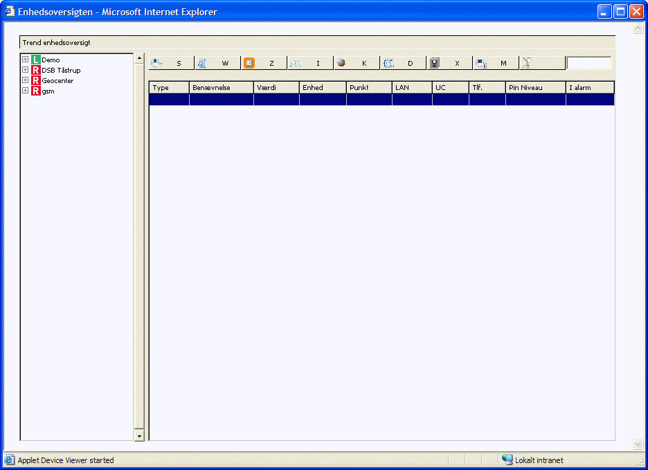
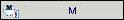
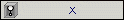
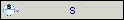
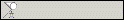

Bruges Microsoft Internet Explorer version 4.02 eller senere eller Netscape version 6.1 eller senere for adgang til 963-Serveren, kan man med Enhedsoversigten se input, output, justeringer, tidszoner og kritiske alarmer fra udvalgte dele af systemet. (For eksempel hvis internetværk vælges, vises alle værdier fra internetværket, og hvis en bestemt Lan vælges, er det kun værdierne fra denne Lan, der vises.) De typer værdier, der fremkommer, kan sorteres efter type (input, output, justeringer, tidszoner og kritiske alarmer). Listen over værdier kan sorteres kolonnevist (benævnelse, enheder, punkt, Lan, OS eller PIN-niveau).
Værdier, der har en rød klokke ved siden af, er i alarmtilstand, værdier med en åben hængelås kan justeres, og værdier med en lukket hængelås kan ikke justeres. Alarmtilstanden vises ved siden af værdier, for eksempel: ‘!25.50 HØJ’. Værdierne opdateres hvert 30. sekund.
Sådan vises Enhedsoversigten:
1 Gå til 963-Serveren som beskrevet i kapitlet ‘Tilslutning til 963-Serveren’ i denne vejledning.
2 Log på ved at indtaste brugernavn og password som beskrevet i kapitlet ‘Log på’. 963-Serverens start-side fremkommer. Med denne side kan man få adgang til skematiske sider, Enhedsoversigten, serverstatus, og hvis man har adgang, kan man se alarmoversigten.
3 Klik på ‘Enhedsoversigten’. Enhedsoversigten vises som et separat vindue som vist nedenfor.

4 Klik på det sted, Lan eller den enhed, hvorfra værdierne skal vises.
5 Klik på én eller flere af knapperne, der viser disse dele.
|
Ikon |
Hvad der fremkommer |
|
 |
Kritiske alarmer |
|
Digital input | |
|
Drivere | |
|
 |
Interne sensorer (beregnede MKT-værdier) |
|
Drejeknapper | |
|
 |
Sensorer |
|
Kontakter | |
|
Tidszoner |
6 Hvis displayet skal yderligere sorteres, indtastes de ønskede søgeord i boksen ‘Søg’, og der klikkes derefter på

. Tidligere søgninger huskes og kan vælges fra listen i boksen ‘Søg’.Søgeordene forårsager, at 963 kun viser dele i Enhedsoversigten med benævnelser, der passer til søgeordene. En asterisk ‘*’ kan benyttes som et wildcard for at angive ethvert antal af ethvert tegn.
7 Sortér værdierne ved at klikke på de relevante kolonnetitler enten ved benævnelse, enheder, punkter, Lan, OS eller PIN-niveau.
Når værdierne er kommet frem, kan man justere værdierne eller vise en graf. Dette beskrives i de følgende af vejledningens kapitler: